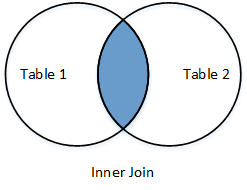
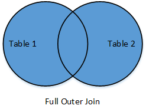
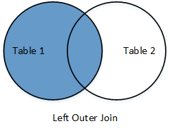
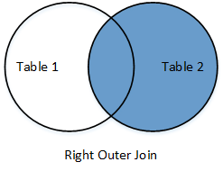

Data science basics
Created for
Iva E. Popova, 2021,

Frame the concepts: Big data, Machine Learning, NLP, No SQL, Graph Database, Data Visualization
Frame the concepts: Big data, Machine Learning, No SQL, Graph Database, NLP, Data Visualization
Big Data
- Collection of datasets being so large, that its difficult to process with the traditional techniques, like RDBMS
- The rule of Vs:
- Volume - or how much are the data?
- Variety - how diverse are different types of data?
- Velocity - at what speed are the new data generated?
- (Veracity - how accurate is the data?)
Big Data - Tools and Techniques
- Apache Hadoop - The Apache™ Hadoop® project develops open-source software for reliable, scalable, distributed computing.
- Python in Hadoop® ecosystem:
- Use Hadoop® Streaming API and do Map-Reduce with simple python code.
$HADOOP_HOME/bin/hadoop jar $HADOOP_HOME/hadoop-streaming.jar \
-input myInputDirs \
-output myOutputDir \
-mapper myPythonScript.py \
-file myPythonScript.py
Machine Learning
Machine learning is a field of computer science that uses statistical techniques to give computer systems the ability to "learn" (i.e., progressively improve performance on a specific task) with data, without being explicitly programmed
Machine Learning
- Coined in 1959 by Arthur Samuel
- Algorithm that can learn from data and predict new data states
- Supervised and Unsupervised Learning
- Interweaves the advantages in computational statistics, data mining, big data, neural networks, logic programming and rule-based computing
Machine Learning with Python
Natural Language Processing (NLP)
- Conceptualised in the 1950s
- ELIZA by by Joseph Weizenbaum
- MARGIE by Schank et all., 1975
- Evolves rapidly with evolution of Machine Learning and Deep Learning
- Google Translate
- Inteligent Chat Bots
NLP with Python
NoSQL Data Stores
- Tries to solve the problems of storing and manipulating data, which can not be structured efficiently into tables
- Variety of types, most popular:
- Key-value pair
- Document-oriented
- Graph Database
Python and NoSQL stores
- pickleDB for key-value pairs databases.
- PyMongo for MongoDB document-oriented databases
- Neo4j Python Driver for Python Graph databases.
Data Visualization
- Matplotlib for classic visualizations
- Bokeh for interactive visualizations capable of handling very large and/or streaming datasets.
- Lightning python client for reproducible and real-time visualization with Python and d3.js
Anaconda notes
Next sections demonstrate the usage of various Python's Data Science related packages. You can install them separatelly, as given in the slides, or you can skip the installations, and use the Anaconda Python's distribution, bundled with data science and machine learning related applications
iPython and Jupiter Notebook
iPython and Jupiter Notebook
Overview
- A client-server application, which allows you to edit and run your notebooks via a web browser
- A notebook is an application which consists of code and text
- In the end of 2014, Project Jupyter started as a spin-off project from IPython
- Now, IPython is the name of the Python's Jupyter backend (kernel)
- Live Demo:
- Parsing JSON with pandas.ipynb
- Parsing JSON with pandas @Google Colaboratory
iPython
- IPython - an enhanced Interactive Python, which provides:
- A powerful interactive shell
- Flexible, embeddable interpreters to load into your own projects
- Support for interactive data visualization and use of GUI toolkits.
- Easy to use, high performance tools for parallel computing.
- A kernel for Jupyter.
iPython install
#install iPython with pip3
$ pip3 install ipython
#install iPython on pipenv
$ pipenv install ipython
Jupyter Notebook - install
#install jupyter with pip3
$ pip3 install jupyter
#install jupyter on pipenv
$ pipenv install jupyter
Create a simple Jupyter Notebook
- Start the server:
- Now you can create from the browser your notebooks
# navigate to the folder you want to be served:
cd jupyter_demos
# start the server:
jupyter notebook
numpy
numpy
numpy overview
- numpy is a python package that adds support for:
- large, multi-dimensional arrays and matrices
- large collection of high-level mathematical functions to operate on these arrays
- Written mainly in C langualge
- numpy arrays and operations are much faster than Python's list equivalents.
- pandas is built on top of numpy
data types
- Numpy supports much finer data types than Python
- Data types @docs.scipy.org
N-Dimensional Arrays
- The main object in numpy is the homogeneous multidimensional array
- It is a table of elements (usually numbers), all of the same type, indexed by a tuple of positive integers for each dimension.
- In numpy, dimensions are called axes
- Number of axes defines the rank of the array
Examples
- numpy array examples in Jupyter Notebook:
- See as html
- Or play online (if you have Google Account), or download the notebook: NDArrays.ipynb
References
- Functions and Methods Overview
- numpy in PyPi
pandas - Overview
pandas - Overview
Overview
- pandas is an open source library providing high-performance, easy-to-use data structures and data analysis tools for the Python programming language
- pandas is great for data analysis and modeling
- pandas combined with the IPython toolkit and other libraries creates environment for doing data analysis in Python, which excels in performance, productivity, and the ability to collaborate.
Install
#install pandas with pip3
$ pip3 install pandas
#install pandas on pipenv
$ pipenv install pandas
# install pandas on conda
conda install pandas
Pandas Data Structures
The two primary data structures in pandas are Series and DataFrame.
pandas - Series Object
pandas - Series Object
Pandas Series Object
- A Pandas Series is a one-dimensional array of indexed data, based on the NumPy ndarray.
- But a Pandas Series object wraps both a sequence of values and a sequence of indices
import pandas as pd
ds = pd.Series([1,2,3,4])
print(ds)
0 1
1 2
2 3
3 4
dtype: int64
Create Series with Explicit Indexing
- The explicit index definition gives the Series object additional capabilities compared to numpy arrays
- i.e. the index need not to be an integer, but can consist of values of any desired type
ds = pd.Series([1,2,3,4], index=['a', 'b', 'c', 'd'])
print(ds)
a 1
b 2
c 3
d 4
dtype: int6
Create Series from dictionary
- By default, a Series index is drawn from the sorted keys of the dict.
ds = pd.Series({
"d":4,
"a":1,
"c":3,
"b":2,
"e":5
})
print(ds)
a 1
b 2
c 3
d 4
e 5
dtype: int64
Series Indexing
- You can use a single index value, or a list of indexes, or slicing
##get index object:
print(ds.index)
#Index(['apples', 'bananas', 'oranges'], dtype='object')
## numerical or keyword indexes
print(ds["a"])
print(ds[0])
## indexes as list:
print(ds[['a', 'c', 'e']])
#a 1
#c 3
#e 5
#dtype: int6
Series slicing
- the Series also supports array-style operations such as slicing
## slicing
print(ds["a":"d"])
#a 1
#b 2
#c 3
#d 4
#dtype: int64
Altering index in place
- A Series’s index can be altered in place by assignment
ds = pd.Series([1,2,3,4,5],index=["a","b","c","d","e"])
ds.index = ["A","B","C","D","E"]
print(ds)
#A 1
#B 2
#C 3
#D 4
#E 5
#dtype: int64
NumPy operations on Series
ds = pd.Series([1,2,3,4,5],index=["a","b","c","d","e"])
## filtering by value
ds[ds>2]
#c 3
#d 4
#e 5
#dtype: int64
## multiplication
ds*2
#a 2
#b 4
#c 6
#d 8
#e 10
#dtype: int64
Dictionary like operation on Series
ds = pd.Series([1,2,3,4,5],index=["a","b","c","d","e"])
"a" in ds
#True
"f" in ds
#False
Missing Data
- Missing data can appear when we transform or make some operations on Series oject. These data values are marked as NaN (Not A Number) values
ds1 = pd.Series([1,3], index=["a","c"])
ds2 = pd.Series([2,3], index=["b","c"])
print(ds1+ds2)
#a NaN
#b NaN
#c 6.0
#dtype: float64
All Examples
- Examples as HTML: Series.html
- Examples as ipynb: Series.ipynb
- Examples as ipynb on Google Colab: Series.ipynb on Google Colab
References
pandas - DataFrame Object
pandas - DataFrame Object
Pandas DataFrame Object
- a DataFrame is an analogue of a two-dimensional array or table with flexible row and column indices.
- You can think of a DataFrame as a sequence of aligned (sharing same index) Series objects
- i.e. each column in a DataFrame is represented by a Series Object
Create DataFrame from a single Series object.
- A DataFrame is a collection of Series objects, and a single-column DataFrame can be constructed from a single Series.
# create Series Object:
prices_ds = pd.Series([1.5, 2, 2.5, 3],
index=["apples", "oranges", "bananas", "strawberries"])
# create DataFrame Object from prices Series:
prices_df = pd.DataFrame(prices_ds)
print(prices_df)
# 0
#apples 1.5
#oranges 2.0
#bananas 2.5
#strawberries 3
Create DataFrame from a single Series object.
- We can pass columns names, instead of defaults
# create DataFrame Object from prices Series:
prices_df = pd.DataFrame(prices_ds,columns=["prices"])
print(prices_df)
# prices
#apples 1.5
#oranges 2.0
#bananas 2.5
#strawberries 3.0
Create DataFrame from a dictionary of Series object.
- A DataFrame can be thought as a dictionary of Series objects, where the dictionary keys represent the columns names.
prices_ds = pd.Series([1.5, 2, 2.5, 3],
index=["apples", "oranges", "bananas", "strawberries"])
suppliers_ds = pd.Series(["supplier1", "supplier2", "supplier4", "supplier3"],
index=["apples", "oranges", "bananas", "strawberries"])
fruits_df = pd.DataFrame({
"prices": prices_ds,
"suppliers": suppliers_ds
})
print(fruits_df)
# prices suppliers
#apples 1.5 supplier1
#oranges 2.0 supplier2
#bananas 2.5 supplier4
#strawberries 3.0 supplier3
All Examples
- Examples as HTML: DataFrameOverview.html
- Examples as ipynb: DataFrameOverview.ipynb
More on pandas.DataFrame() class
Create DataFrame form csv files
DataFrame form csv files
note
- In next slides, the term csv is used in its broader meaning - i.e. it will be used for tab/semicolon/whatsoever separated values
the Dataset
- In next examples the csv files used are taken from IMDb data files available for download
- For test purposes, a shorten versions of the files, containing the first 500 records from each, are available:
- title.basics_sample_500.tsv
- name.basics_sample_500.tsv
read_csv
read_csvis the preferred method for loading csv data into a DataFrame object- It provides a flourish amount of properties and methods for fine-tune loading, cleaning and manipulation of csv files.
Examples
- examples as HTML: imdb.html
- example as ipynb: imdb.ipynb
More on pandas.read_csv
DataFrames Manipulations
DataFrames Manipulations
- Examples as HTML: DataFramesManipulations.html
- Examples as ipynb: DataFramesManipulations.ipynb
DataFrames Merge (aka SQL Join)
DataFrames Merge
Overview
mergemethod in pandas is analogues to SQLjoinoperation!- merge is the entry point for all standard database join operations between DataFrame objects:
- The related
DataFrame.joinmethod, uses merge internally for the index-on-index (by default) and column(s)-on-index join.
{kind=link}
Syntax
pd.merge(left, right, how='inner', on=None, left_on=None, right_on=None,
left_index=False, right_index=False, sort=True,
suffixes=('_x', '_y'), copy=True, indicator=False,
validate=None)
the datasets
did; dname
1; Ivan
2; Asen
3; Maria
4; Stoyan
5; Aleks
6; Svetlin
did; language
2; "C++"
3; "Python"
3; "R"
6; "Java"
Inner Join
|  | Return only the rows in which the left table have matching keys in the right table |
{kind=link}
dev_langs_inner = pd.merge(devs,langs,on="did",how='inner')
print(dev_langs_inner)
did dname language
0 2 Asen "C++"
1 3 Maria "Python"
2 3 Maria "R"
3 6 Svetlin "Java"
Output Join
|  | Returns all rows from both tables, join records from the left which have matching keys in the right table. |
{kind=link}
dev_langs_outer = pd.merge(devs,langs,on="did",how='outer')
dev_langs_outer
did dname language
0 1 Ivan NaN
1 2 Asen "C++"
2 3 Maria "Python"
3 3 Maria "R"
4 4 Stoyan NaN
5 5 Aleks NaN
6 6 Svetlin "Java"
Left outer join
|  | Return all rows from the left table, and any rows with matching keys from the right table. |
{kind=link}
dev_langs_left_outer = pd.merge(devs,langs,on="did",how='left')
dev_langs_left_outer
did dname language
0 1 Ivan NaN
1 2 Asen "C++"
2 3 Maria "Python"
3 3 Maria "R"
4 4 Stoyan NaN
5 5 Aleks NaN
6 6 Svetlin "Java"
Right outer join
|  | Return all rows from the right table, and any rows with matching keys from the right table. |
{kind=link}
dev_langs_right_outer = pd.merge(devs,langs,on="did",how='right')
dev_langs_right_outer
did dname language
0 2 Asen "C++"
1 3 Maria "Python"
2 3 Maria "R"
3 6 Svetlin "Java"
All Examples
- Examples as HTML: DataFramesMerge.html
- Examples as ipynb: DataFramesMerge.ipynb
resources
DataFrames Join
DataFrames Join
Overview
- Join columns with other DataFrame either on index or on a key column
- By default, join() will join the DataFrames on their indices
- Efficiently Join multiple DataFrame objects by index at once by passing a list
All Examples
- Examples as HTML: DataFramesJoin.html
- Examples as ipynb: DataFramesJoin.ipynb
references
YouTube
These slides are based on
customised version of
framework